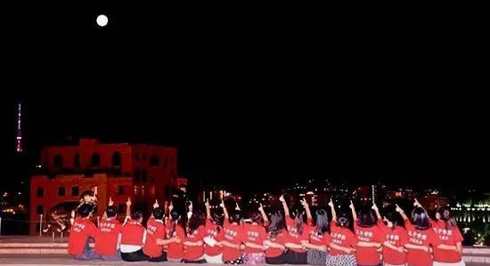
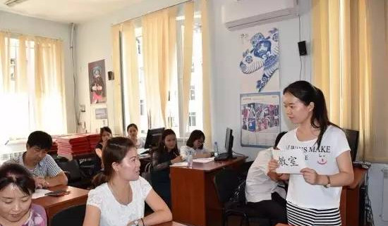
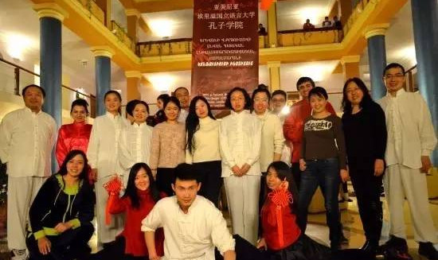
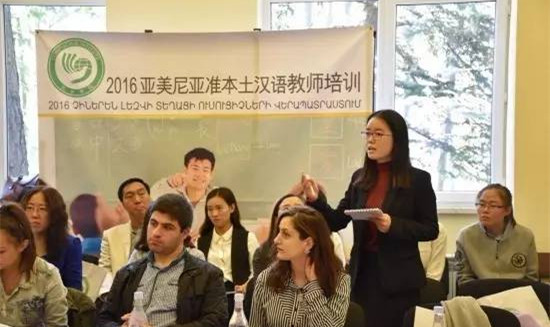
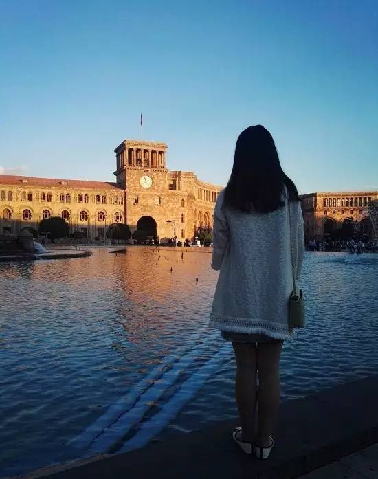
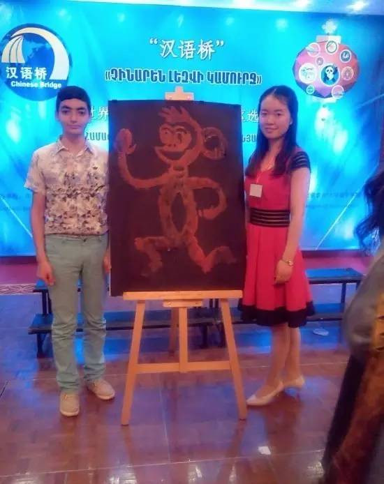
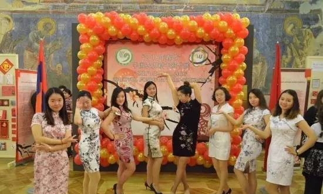
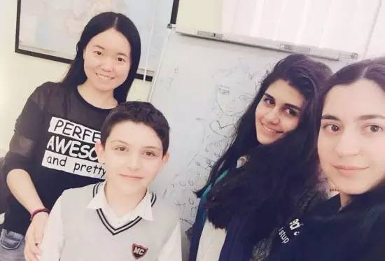

志愿感言 | 我用四季谱一首《小幸运》（亚美尼亚）
 524
524
作者：刘慧珍 埃里温“布留索夫”国立语言和社会科学大学孔子学院
初见埃里温是早春时节，炎热的夏和金色的秋来了又去，如今，冬姑娘刚洒下一片圣洁，却已是离别时。冬季独有的静谧让人的思路愈发清晰，也让离别的意味愈加浓厚。一年的志愿者时光转瞬即逝，而你可知，遇见你，是我的小幸运。

但愿人长久 千里共婵娟
[春] 播种希望
经过12个小时的颠簸，飞机终于平稳抵达埃里温，这个我曾幻想了很多遍的城市如期映入眼帘。无论是前来接站的老师一把接过行李的热情，还是在院长家一桌丰盛的接风晚宴，都让旅途的疲惫一扫而光；无论是孔院贴心的住房安排，还是陌生人一个善意的微笑，都让我心存感激，心存希望。我记得那时从心底里涌起的暖流是无以言喻的，而我也不曾知道，未来的日子充满着无数这样的感动和温暖。

汉语教学示范课
[夏] 活力四射
埃里温的夏天是一个让人又恨又爱的季节：很多时候，骄阳似火让你不得不在阴凉处躲避一整天，而它的热情澎湃又让你徜徉其中无比痴迷。这一年在孔子学院的工作和生活像极了这活力四射的夏日！

孔院大家庭—武术文化推广

我在本土汉语教师培训上点评
没有什么能比投入更让一个人幸福了。从紧锣密鼓地筹备HSK考试到携手武术文化走进社区，从《跟我学汉语》节目在亚美尼亚电台正式开播到中国文化融入当地《最强大脑》知识竞赛类节目，从应邀参加全国高校博览会到组织“世界语言文化日”巡展，从惊艳亮相于“六一国际儿童节”博览会到中医文化之花盛开在亚美尼亚，从推动中亚经贸合作升温的经济讲座到“丝绸之路”中小学校长国际论坛，我们让中国文化绽放在这诺亚方舟曾经停靠的地方，书写着一个又一个动人的故事。每一次精彩活动的背后都浸透着全体老师的辛苦付出，那在孔院办公室忙碌到无暇顾及一日三餐的日子，那在大型活动前夜的半兴奋半焦虑的彻夜难眠，让人回想起来，都有满满的充实和幸福感萦绕在心头。
青春就是这样吧，站在需要你的地方，散发自己的光和热。我们来自祖国的天南海北，共同的选择将我们紧密联系在这遥远的国度，从此风雨同舟，心手相连，那每个瞬间的全力以赴犹如夏日阳光般耀眼，也如傍晚凉风般沁人心脾，如今忆起，依旧让人热泪盈眶。
[秋] 感恩收获
埃里温的秋天是极美的。金黄的叶子像蝴蝶般翩翩起舞，累了就安静地落下，于是，大街小巷就如同一条条金光大道，延伸着人们的梦想。枝头挂上了沉甸甸的葡萄、桑葚——这是一个收获的季节。

黄昏的共和国广场
秋日黄昏，独坐在共和国广场前的长椅上，来来往往都是洋溢幸福的行人。我沉思着，打量这座悠闲的小城。在这陌生的异国他乡我收获的是满满的感动与成长。院长的嘘寒问暖让我感到亲人般的温暖，而每一次犯错后受到的严厉批评也在鞭策着我不断进步；每每遇到不顺心的事，总有老师愿意倾听、温柔开导直至我彻底释怀。还记得我曾在辅导汉语桥选手时一遍一遍地检查演讲和才艺表演，深夜里撰写新闻报道反复纠结于一个词语的选择，独立策划中秋节晚会时的焦头烂额……这点点滴滴的经历让我有种前所未有的踏实感，也将成为人生中最宝贵的财富。生活中的自己也变得更为独立坚强，第一次做饭、第一次熨衣服、第一次换灯泡，许许多多的第一次像一幅幅画面，充实了我的梦，丰富了我的小小世界。

[冬] 宁静致远
在这个40年来最冷的冬季，也让人分外怀念的温存。这一年中与孔院大家庭相伴的日子串成了最动人的画面。中秋节，我们一起寄情明月，把酒言欢；春节时，我们包饺子，吃年夜饭，守候零点钟声的响起，一家人其乐融融；阳光明媚的午后，我们徒步远足，赏一路曼妙风景，觅历史隐藏的足迹；雨过初晴的山谷河岸里，我们与花草虫鱼逗趣玩乐。


我和可爱的孩子们
【转 载】孔子学院总部/国家汉办